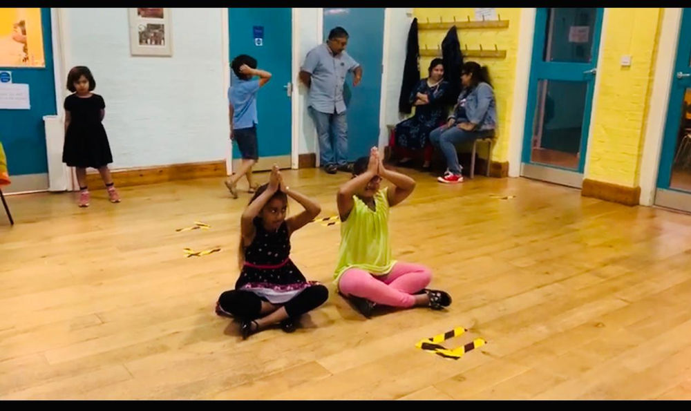
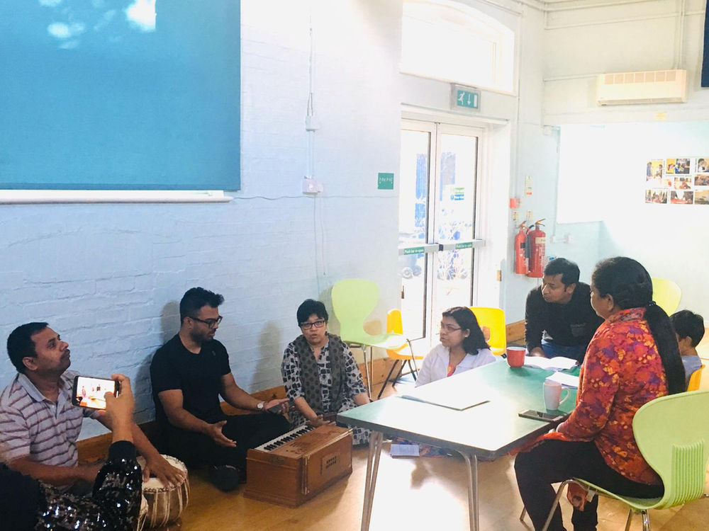
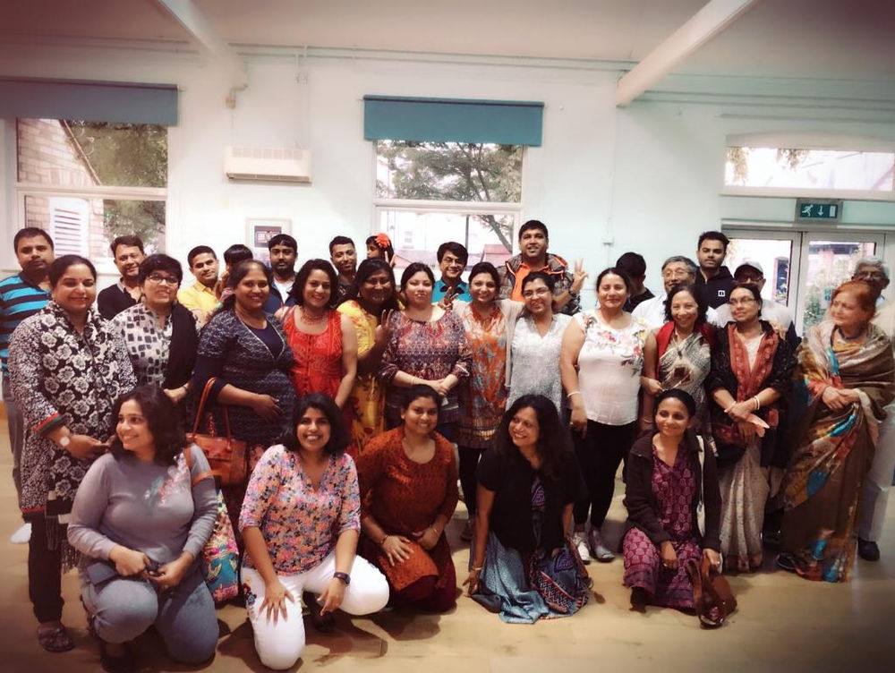
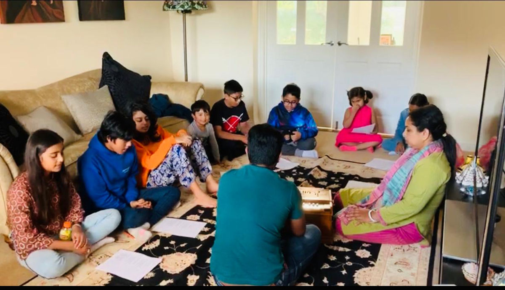

Unity in Diversity
About ICS
A not-for-profit community organisation, run entirely by volunteers since 2002.
Our mission
The Indian Cultural Society (ICS) is a not-for-profit community organisation whose mission is to showcase the richness and diversity of Indian art, culture and traditions, promote community cohesion, goodwill and harmony, facilitate socio-cultural integration and foster wellbeing and multi-culturalism. Unity in Diversity is the main motto of the Society.
The society, established in 2002 and run entirely by a group of passionate volunteers, has aimed to fulfil this mission mainly through organising India-centric events throughout the year. We also collaborate with like-minded organisations, from the UK and indeed from all parts of the world, to fulfil our mission.
ICS activities and events, on the one hand, canvas the diversity that is inherent in the traditional Indian experience, whilst on the other they draw heavily from a plethora of customs and traditions prevalent in the UK of today, ultimately enabling that vital confluence of cultures and shared experiences between the East and West.
Finally, one of our biggest aspirations is to be a cradle of pluralism for the next generation, encouraging them to cherish their roots and uphold their traditions, as well as to espouse a way of life that draws upon the best of all worlds.
What we stand for
Culture
Showcasing the richness and diversity of Indian traditions, philosophy and art underpinning its Culture.
Community
Promoting cohesion, goodwill and harmony across Cambridge.
Confluence
Bringing East and West together through shared experiences.
Next generation
Helping young people cherish their roots while embracing the best of all worlds.
Glimpses of preparations and rehearsals
Join the fun — book your diary!



